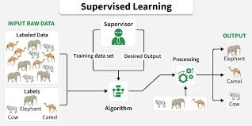
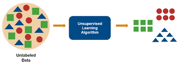
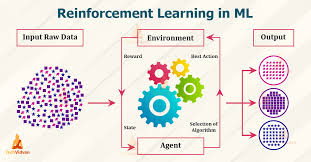

What is Machine Learning?
Machine learning is a subset of artificial intelligence that focuses on algorithms that can learn patterns from data and use those patterns to make predictions or decisions. Instead of relying on fixed instructions, machine learning models improve by analyzing training data. The goal of training is to help the model generalize, meaning it can apply what it learned to new, real-world data. Once a model is trained, it can perform inference by using learned patterns to produce predictions or outcomes. Deep learning, a type of machine learning that uses large neural networks, has become a major part of modern AI systems. Machine learning is also closely connected to data science because it helps analyze data and automate decision-making based on those insights.
Supervised Learning

Supervised learning trains a model using labeled data to learn the relationship between inputs and the correct outputs. It is commonly used for tasks like classification and regression.
Unsupervised Learning

Unsupervised learning analyzes unlabeled data to find patterns, relationships, or structure in the dataset. It is often used for tasks like clustering or dimensionality reduction.
Reinforcment Learning

Reinforcement learning trains a model through trial and error by rewarding good actions and penalizing bad ones. The goal is for the model to learn actions that maximize long-term rewards.